This is a manual of DVtracer, an ImageJ Plugin written for image intensity measurement of calcium imaging analysis of cameleon/G-CaMP-RFP expressing C. elegans. So, followings are not subjects of this document; Setting up imaging equipments, specimen preparation, image acquisition and data analysis. For these issues, the Rex A. Kerr's worm book text; Imaging the activity of neurons and muscles will provide good information. Also, you may check several other documents such as readme_Cameleon tools html file in our lab protocol database for some of above issues.
This software is provided "as is" and there is no warranty of any kind and no support at all.
Copyright © 2009, 2010, 2013, 2015 Taizo Kawano
In addtion to measuring the brightness value of fixed/moving ROIs, DVtracer also has some functions for easy imaging evaluation, including plotting raw ratio graph, pseudo-colored ratio image and ratio image with brightness infomation. The measurements data are saved in .txt file as csv format. (There is an option to save in .log file as Jmalyze compatible format). Also, the ratio change graph is saved in .png file automatically.
To use it, put the DVtracer_x.jar file to ImageJ plugin folder. DVtracer needs an image stack that taken by beamsplitter attached camera, such as Dual-View, W-View and equivalents. It's not for single channel imaging. Also, left/right images must be aligned as complete as possible. Otherwise the program might mistakenly detect roi.
The ImageJ's conventional stack or virtual stack are the format that can work with. Hyper stack nor 5D image may not work (I didn't try). So, If you use burst mode micromanager for image acquisition, you need to copy or save the 5D image to stack. If you use Volocity, export the image as tiff format. For later use, you might better follow naming rule. ex, genotype_samplenum.tif.
On version 10 and after, it manage the files produced by RealTimeTracker/TrackandStim, and thereby the output format has been changed.
DVtracer requirs you to set left channel ROI and add it to ROI manager. You can use rectangular, oval and polygon selection tool to set ROIs. To add them into ROI manger, use Edit/Selection/Add to Manager or command-T. You should set the ROI at only left part of image. DVtracer use ROIs in left part of image to seek ROIs at right part.
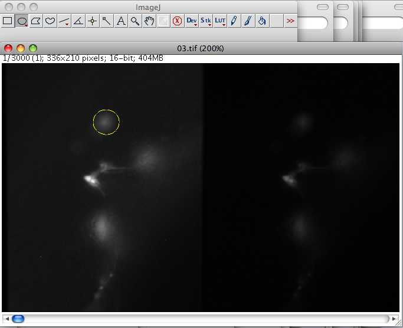
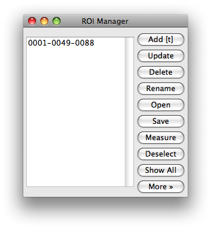
If you have done setting ROI, click Save button and save it as zipped roi-set to use later. Then choose DVtracer from Plugin menu.
You will see the theDVtracer interface.
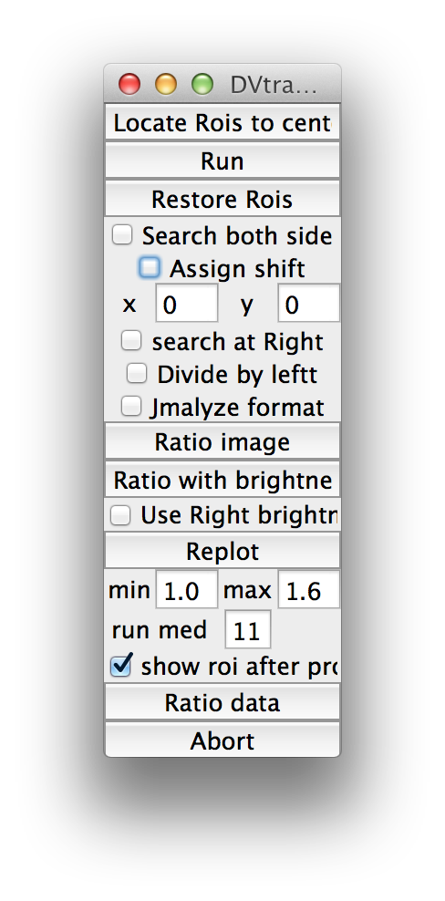
Let's just click Run button for now.
It might ask frame interval (defalt is 100 msec) if your stack don't have frame interval infomation. Then it will show a dialog saying that the mean intensity of whole image of each half will be used as background (See "ROI types" section to use paticular region as background).
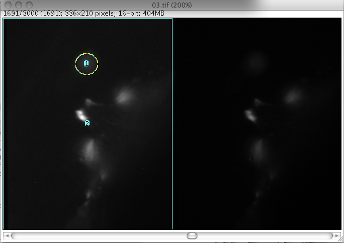
You will see the ROI tracing bright object. You had better to check if the ROIs are tracing where you want to analyze. If you observed the unfavorable behaviour of ROIs, you can stop processing by clicking Abort button. Restore Rois button reset Rois at inithial position and frame. Then set ROIs with different size and place ROIs or use bind/fix/ref ROI (see "ROI types" section).
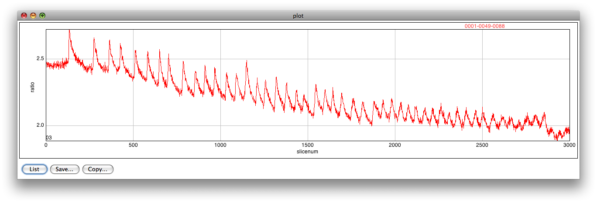
When it have done, a graph showing the ratio of ROIs will be appeared. The formula used here is just
(left ROI - left background)/(right ROI - right background)
So, its neary raw data and without base line correction. This graph is saved in the same folder of the image with name imagename.png. (From ver.16, "runmed" value used to show the plot with filtered by running median method. The value is bin of filter window, which must be odd value. If you put 0 here you can see raw data.
The following is an example of begining of the output .txt file which is also saved in the same place. It formated as comma delimited data and there are two header line. First line showing roi names and width/height of the roi. To calculate the coordinate of the centeor of ROI, use this roi size informatino. Next line is simply indicating name of each column. Data of each frame follow the header. each row have data of each slice, and left most column show time point. Next three numbers are indicating stage coordinate. Measurements of ROIs consist of three data, x and y coordinate of top left cornar of the ROI and mean intensity. Since the coordinate indicate topleft of the roi, you need to add 1/2 of roi width and height to have centor of roi. The left ROIs data come first and measurements of right part are put at right. You can analyze this out put file by your favarit program, such as exel, Matlab, R etc..
RIM,22,22,nr,24,24,bg,168,256,
time,xpos,ypos,zpos,l_RIM_x,l_RIM_y,l_RIM_mean,l_nr_x,l_nr_y,l_nr_mean,l_bg_x,l_bg_y,l_bg_mean,r_RIM_x,r_RIM_y,r_RIM_mean,r_nr_x,r_nr_y,r_nr_mean,r_bg_x,r_bg_y,r_bg_mean,
0.0,-9383.800000000001,-4213.2,-1496.4,78.0,113.0,704.6770833333334,19.0,148.0,279.1205357142857,0.0,0.0,165.0,246.0,113.0,203.78125,187.0,148.0,160.25669642857142,168.0,0.0,143.68815104166666,
.
.
.
In short, DVtracer seek center of mass of the ROI, and move the ROI so that the center of ROI and center of mass of the ROI locate same place. This is the logic to trace the movement, and it is developed refering the Time Series Analyzer writen by Balaji J. Measuring right part is basically done by adding half of width of image to x coordinate of left ROI. That is why you need nearly perfect left/right arrignment. However, the misalignment is not inevitable sometimes. So, left/Right shift of each ROI are measured using initial 30 slices. During this period, centerising ROIs are carried out at both left and right part. Then, the average shift of each ROI are used actual positioning of right ROI. If you activate an option,"Search both side", DVtracer will search the centor of mass at both left/right part at all slices. It has two shortcoming. i) Requires more processing power/time. ii) makes noisy data. Those are reason that this program works as described above normally. However, chromatic aberration or with some reason, left/right shift may not constant in the whole field. (compare to bottom left part with top right part, the shift is opposit). If the sample is relocated nealy left end to nealy right end, this might affect the result and it might provide pseudo-signal in some case. In that case you may try searching center at both image option.
The above description suit cameleon sensors which have nearly close brightness and have very little change in brightness. These days G-CaMP-RFP are introduced and they have better signal than cameleon. However, the large change of brightness of G-CaMP make trouble in some case with the above method. Since the dimmer signal in low Ca++ condition, left-right aligment often fail. So use "Assign Shift" option when you use G-CaMP-RFP. Using this option, you can manually set the amoun of left to right shift. If the alignment of Dualview was parfect, x;0, y;0 should fine. if right (grenn channle) object is shifted more right x must be positve valule. Also use "Divide by left" option to get Green/Red ratio.
From ver.15, "search at Right" option is available. This option is intended for a sample that have large difference between left and right image, and right half is better to track roi. When you use this, automatically activate "Assign Shift". Now the values of shift have to be set opposite from above (if left roi is upper than right, y value must be negative).
There are six types of ROIs. i) normal, ii) bind, iii) fix iv) rotate, v) ref and iv) background.
The rotate roi is obsolete. Use ref roi instead.
This type of ROIs trace object that brighter than peripheral region. If you need to use bind or rotate ROI, there must be at least one this kind of ROI.
Sometimes, you may feel difficaultly setting ROIs properly. For example, if there is adjacent bright object, the ROI tends to jump to the brighter, distinct region. In that case, you may be able to keep the ROI where you want by using "bind" function. The bind function needs another ROI (parent ROI) that is used as origin of positionning of binding ROI (child ROI).
At fisrt, add parent ROI to ROI manager. Parent must be well separated, bright region. Rename the ROI so that you can easily assign it. Next, set child ROI and rename it like this;
child.bind(parent)
Then, use DVtracer as before. During processing, searching center of mass of child ROIs are not carried out, and child ROI is kept at constant distance and location from parent ROI .
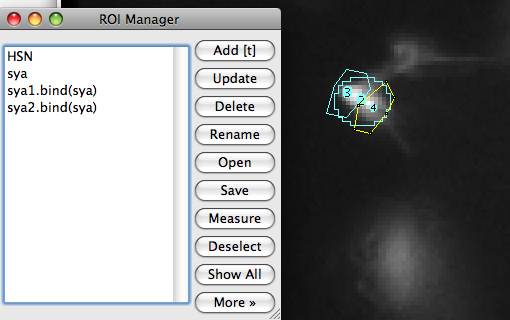
If you want to place ROI to the fixed point, you can use fix function. Adding ".fx" (not .fix) to the end of the name of ROI makes the ROI fix at the place.
This is not working well in some case. use ref roi instead
This type rois are rotate around parent roi keeping constant distance. The longittudinal axis of parent roi is estimated in each slice, and the child roi repostioned so that the angle constituting with longitudinal axis of parent roi keep constant. Following the example.
There are two cells in the middle.
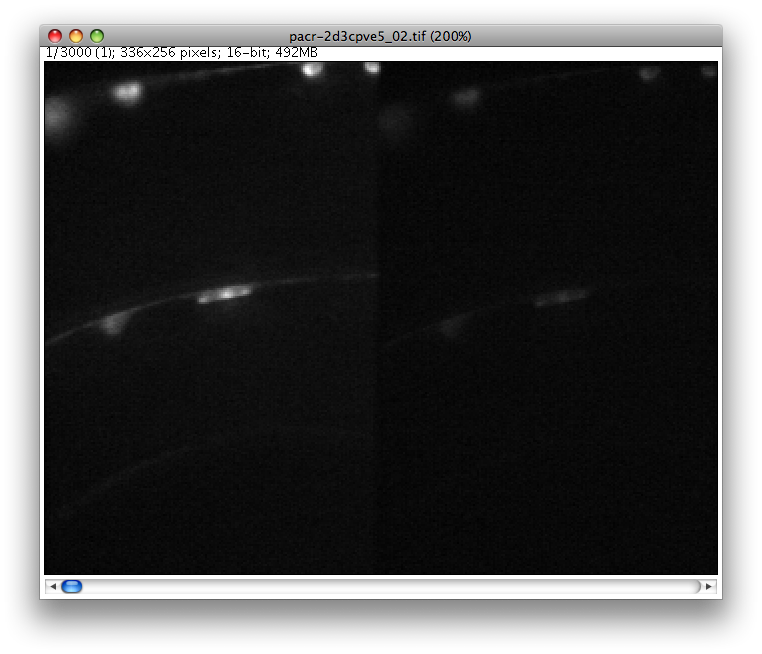
Set rois like this.
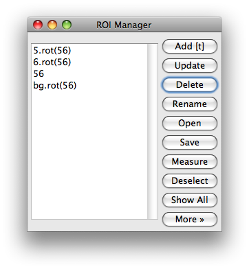
Inithially, rois positioned nealy horizontal.
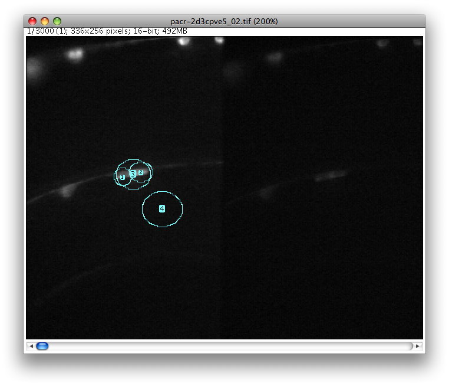
At the end, rois positioned like this.
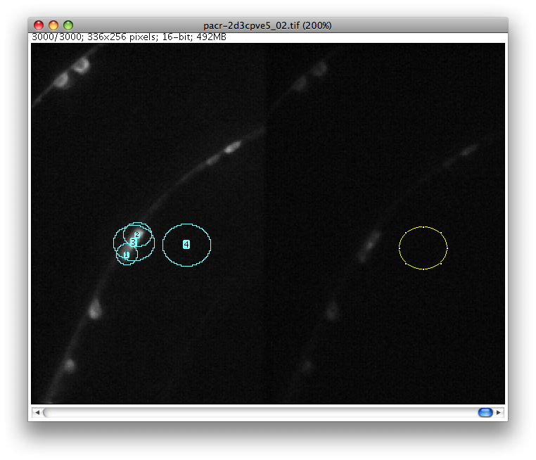
You can use .ref() function on and after ver.11. This type rois use parent roi as reference to locate starting point to search the child roi position. The parent roi must be big enough so that chiled roi covered by parent roi. The region of parent roi is cropped and processed as higher resoltion, sharpend image then chiled rois positions are determined by the filterd image. This processing method allows tracking of object with fast motion and small size. Although the measurements are still done by original image.
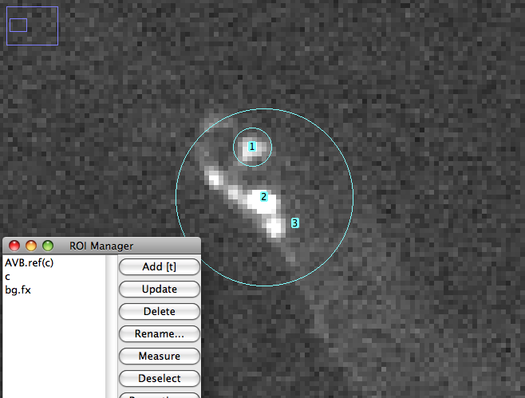
Background ROI is a specific roi used for calculation of left/right ratio. If you don't set particular region as backgroud, mean intensity of each half of image is used as background. If you want to use paticular region as background, set ROI and name it "bg". Mostlikely, you need to add .bind() or .fx suffix to locate background ROI at correct place unless otherwise the background roi move to bright object nearby.
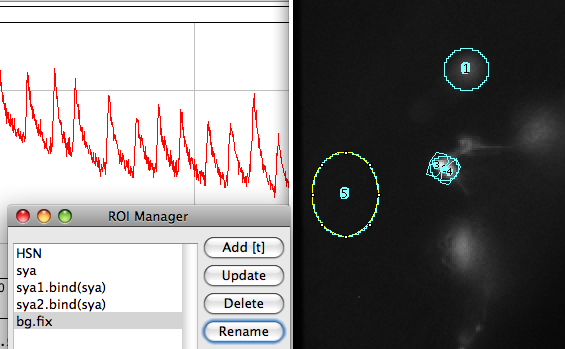
Using above functions, try several times and check how the ratio graph looks to optimize the ROI setting.
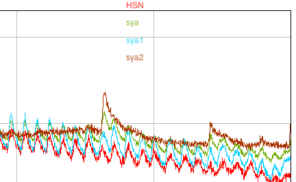
Once you have done tracing roi, you can make pseudo-colored ratio image.
This is memory consuming (in other words heavy, in the system without enough RAM) function, so I recommend you to use it with crooped image or image with reduced slice number.
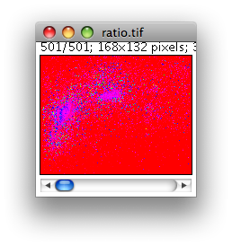
To adjust the range of ratio, use Image/Adjust/Brightness/Contrast...
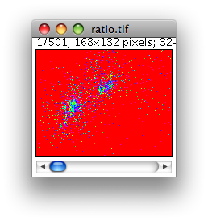
Then you can add brightness information (it use only left channel data right now) to the ratio image.
This is, agin, pretty heavy function.
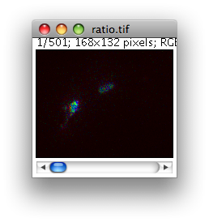
The result produced here is just raw data. Using measurements saved in .txt file, you may need to correct baseline, detect peaks, measure percent change from baseline, do statistical analysis... These things beyond this document and it highly depents on application and what you need.
Good luck.
2009 initial release
20130119 updated according with DVTracer14.
20151107 updated according with DVTracer16.